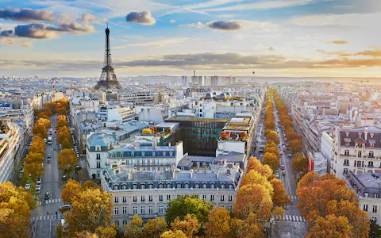
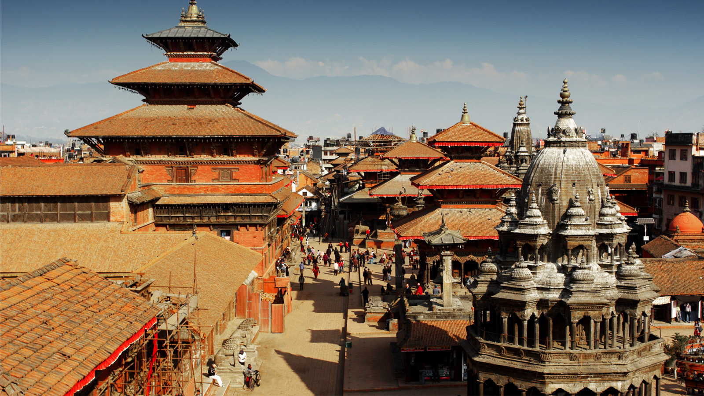
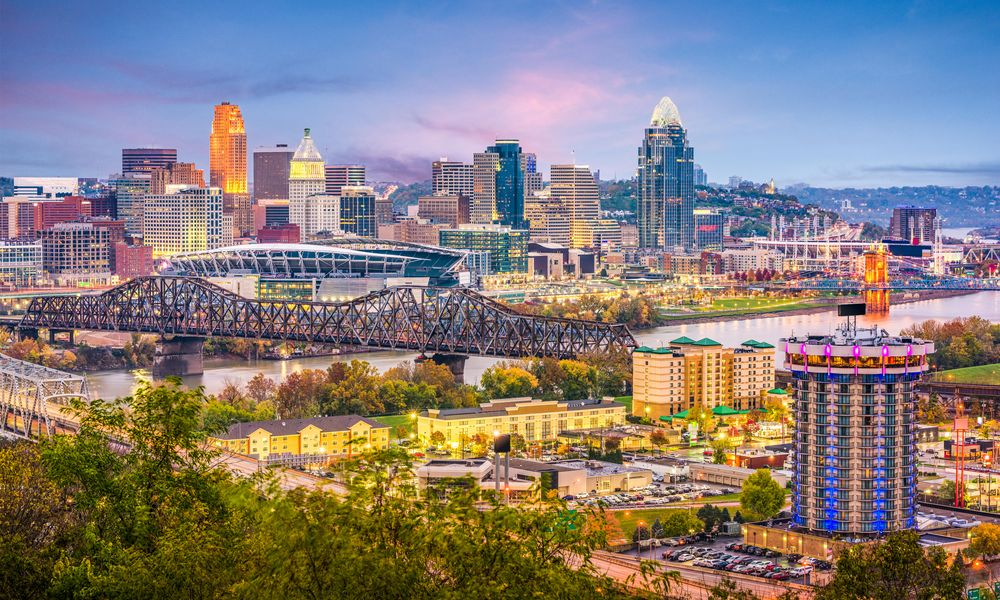
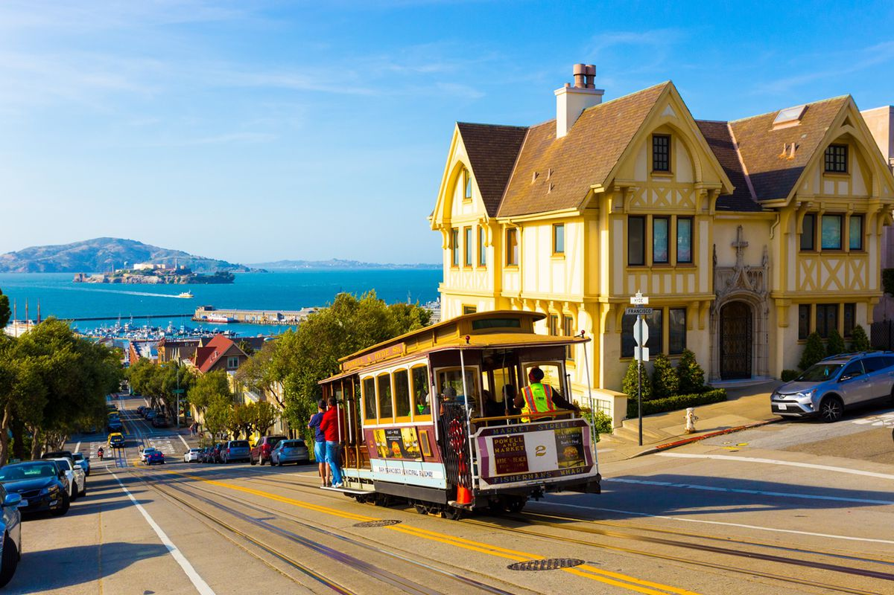

London
London is the capital city of England. It is the most populous city in the United Kingdom, with a metropolitan area of over 13 million inhabitants.
Standing on the River Thames, London has been a major settlement for two millennia, its history going back to its founding by the Romans, who named it Londinium.

Paris
Paris, France's capital, is a major European city and a global center for art, fashion, gastronomy and culture. Its 19th-century cityscape is crisscrossed by wide boulevards and the River Seine.
Beyond such landmarks as the Eiffel Tower and the 12th-century, Gothic Notre-Dame cathedral, the city is known for its cafe culture and designer boutiques along the Rue du Faubourg Saint-Honoré.
Tokyo
Tokyo, Japan’s busy capital, mixes the ultramodern and the traditional, from neon-lit skyscrapers to historic temples. The opulent Meiji Shinto Shrine is known for its towering gate and surrounding woods.
The Imperial Palace sits amid large public gardens. The city's many museums offer exhibits ranging from classical art (in the Tokyo National Museum) to a reconstructed kabuki theater (in the Edo-Tokyo Museum).
Kathmandu
Kathmandu (/ˌkætmænˈduː/;[2] Nepali: काठमाडौं, Nepal Bhasa: य़े: Yei, Nepali pronunciation: [kaʈʰmaɳɖu]) is the capital that locates in the central part of the country and largest city of Nepal with a population of around 3 million.
Kathmandu metropolitan including Lalitpur and Bhaktapur has a large no of population of around 5-6 million people. Kathmandu is also the largest metropolis in the Himalayan hill region. Nepali and Newari is the most spoken language in the city.
Cincinnati
Tokyo, Japan’s busy capital, mixes the ultramodern and the traditional, from neon-lit skyscrapers to historic temples. The opulent Meiji Shinto Shrine is known for its towering gate and surrounding woods.
The Imperial Palace sits amid large public gardens. The city's many museums offer exhibits ranging from classical art (in the Tokyo National Museum) to a reconstructed kabuki theater (in the Edo-Tokyo Museum).
San Francisco
Tokyo, Japan’s busy capital, mixes the ultramodern and the traditional, from neon-lit skyscrapers to historic temples. The opulent Meiji Shinto Shrine is known for its towering gate and surrounding woods.
The Imperial Palace sits amid large public gardens. The city's many museums offer exhibits ranging from classical art (in the Tokyo National Museum) to a reconstructed kabuki theater (in the Edo-Tokyo Museum).
